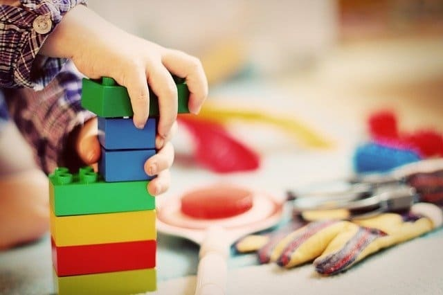
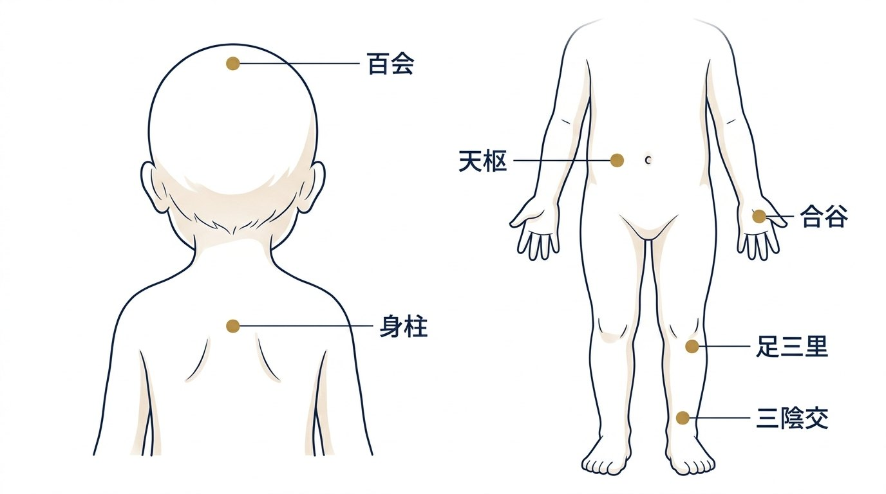

スピッツ母斑の鍼灸
小児期に急激に現れる良性腫瘍のスピッツ母斑。皮膚科での悪性黒色腫鑑別と切除・管理を最優先します。
まず知っておきたい要点と改善の流れ
スピッツ母斑は主に乳幼児から学童期に発生する後天性の色素性母斑の一種で、メラノサイト由来の良性皮膚腫瘍です。ピンクや赤茶色、黒色のドーム状・円錐状の丘疹や結節が短期間で急激に増大する傾向があり、通常は直径1cm程度で成長が止まります。組織学的にも外観上も悪性黒色腫（メラノーマ）と類似する点があるため、皮膚科でのダーモスコピー検査や必要に応じた全切除による病理診断での確実な鑑別が極めて重要です。（公式解説）
このようなお悩みはありませんか？
- ✓顔や首、腕などに突然ピンク〜赤褐色や黒色の盛り上がりが出た
- ✓短い期間で数ミリ〜1cmほどへ急に大きくなった
- ✓衣服の摩擦などで擦れて炎症や出血が起きないか心配
- ✓悪性黒色腫（メラノーマ）との違いが分からず不安
当院の施術アプローチ・改善の流れ
なぜ鍼灸で改善へ向かうのか？（作用機序の図解）
スピッツ母斑に対する鍼灸は、「刺さない小児はり」による皮膚感覚〜自律神経の鎮静機序を通じて、お体本来の回復力を引き出します。

刺さない専用の「小児はり（てい鍼）」で、背中や手足の皮膚をリズミカルに優しく撫でます。
皮膚への穏やかな触覚刺激が脳へ伝わり、安心ホルモン（オキシトシン等）と副交感神経を促します。
興奮しやすい子どもの神経バランスを落ち着かせ、夜泣き・おねしょ・起立不調の土台を整えます。
保護者の方と寄り添いながら、お子さまの体調と成長ペースに合わせた無理のないケアを続けます。
院長YouTube解説・関連動画
スピッツ母斑は、突然淡紅褐色から黒色の丘疹などが現れる
スピッツ母斑の症状は、突然、淡紅褐色から黒色の丘疹や結節、不整形斑が現れることです。現れる時期は乳幼児から学童期です。症状は急激に進みます。
症状の進む速度は早いですが、良性の母斑性の病気のため、一定以上広がったり遠隔に転移したりすることはありません。
スピッツ母斑は良性のメラノサイト性腫瘍で、主に子どもや若者に見られる特徴的な皮膚の変化を伴います。以下にスピッツ母斑の一般的な症状と特徴を詳しく説明します。
・外観と色
スピッツ母斑は、ピンク、赤、茶色、または黒色を示すことがあります。色は母斑に含まれるメラニンの量と分布によって異なります。母斑は通常、明確な境界を持ち、色が均一ですが、場合によっては複数の色を含むこともあります。
・サイズと形状
直径は数ミリメートルから1センチメートル程度で、成長するとさらに大きくなることがあります。多くの場合、ドーム状または円錐形の突出した形状をしています。
・テクスチャー
表面は滑らかか、わずかにざらついていることがあります。また、硬さを感じることもあります。
スピッツ母斑は通常、単独で発生しますが、複数存在する場合もあります。
・発生部位
スピッツ母斑は体のどの部分にも現れる可能性がありますが、顔、首、腕など、太陽に晒されやすい部位に発生することが多いです。
スピッツ母斑自体は痛みを伴わず、かゆみや不快感を引き起こすことは一般的ではありません。しかし、大きさや位置によっては衣服による摩擦などで炎症を起こすことがあります。
・成長と変化
スピッツ母斑は比較的成長が遅いですが、数ヶ月から数年の間に徐々に大きくなることがあります。突然の急激な成長、色の変化、出血、痛みなどがあった場合は、病院に行くことが重要です。
スピッツ母斑は通常、良性の腫瘍ですが、特に大人に発生した場合や急激な変化が見られる場合は、悪性のメラノーマとの鑑別が必要になることがあります。
スピッツ母斑の改善方法は、切除することです。悪性黒色腫と鑑別を行うためにも全て切除して慎重に判断をすることが大事です。
スピッツ母斑は、時間の経過を待っていても自然に改善することはありません。また、突然大きくなったり盛り上がったりすることもあります。そのため、切除をおすすめします。
スピッツ母斑の改善は、主にその外観、大きさ、成長の速度、および年齢や健康状態に基づいて決定されます。スピッツ母斑は良性の腫瘍であるため、必ずしも改善が必要というわけではありませんが、悪性の可能性を排除するために、または審美的な理由から改善を選択することがあります。以下に、スピッツ母斑の一般的改善方法を紹介します。
・外科的切除
スピッツ母斑の最も一般的な改善法は、外科的に腫瘍を完全に切除することです。この方法は、腫瘍の悪性度を確認するため、または審美的な理由で行われます。完全に取り除くことで、再発のリスクを減らし腫瘍の性質を詳しく分析できますが、手術による傷跡が残る可能性があります。
・レーザー
特定のケースでは、レーザーがスピッツ母斑の除去に用いられることがあります。これは、腫瘍の色素を標的とする特定のレーザーを使用します。外科手術に比べて侵襲性が低く、回復時間が短い場合がありますが、色素の深さや腫瘍の性質によっては、効果が限定的であるか、複数回の改善が必要になることがあります。
スピッツ母斑が小さく、成長の兆候が見られない場合、積極的な改善を行わずに定期的な観察を選択することがあります。不必要な手術や処置を避けることができますが、定期的に医師にみてもらうことが必要になります。
・クライオセラピー
小さなスピッツ母斑に対して、液体窒素を使用して凍結させ、除去する方法があります。比較的簡単な手術で、外科的切除に比べて回復が早い場合がありますが、完全に腫瘍を除去することが難しく、色素の不均一な変化を引き起こす可能性があります。
スピッツ母斑そのものを直接改善するために薬を使用することは一般的ではありませんが、関連症状や手術後のケア、合併症の管理にはいくつかの薬が用いられることがあります。以下にその詳細を説明します。
・抗生物質
手術後に感染予防のため、または感染が既に発生した場合に使用されます。外科的切除後、傷口が感染するリスクを低減するために、予防的に処方されることもあります。
効果: 抗生物質はバクテリアによる感染を改善または予防するために用いられます。特定の抗生物質は感染の種類や、アレルギー歴などに応じて選択されます。
・非ステロイド性抗炎症薬（NSAIDs）
手術後の炎症や痛みを管理するために使用されます。これには、イブプロフェンやナプロキセンなどが含まれます。
効果: NSAIDsは炎症を減少させ、痛みを和らげる効果があります。これにより、快適性が向上し、回復過程がスムーズになります。
・局所麻酔薬
小規模な手術やレーザー時に、改善を行った部位の痛みを緩和するために局所的に使用されます。これには、リドカインやプリロカインなどが含まれます。
効果: 局所麻酔薬は、改善を行なった部位を一時的に麻痺させ、処置中の痛みを感じないようにします。
・ステロイド薬
非常にまれですが、手術後の過剰な炎症反応が起こることがあります。その場合、過剰な炎症反応を抑制するために局所的または全身的にステロイド薬が使用されることがあります。
効果: ステロイド薬は強力な抗炎症効果を持ち、腫れや赤みを迅速に減少させることができます。
スピッツ母斑の特徴は、比較的若い人に起きることや、短い期間で急激に広がることです。また、発生する部位は顔面が多いです。
短い期間で急激に広がり、大きくなりますが大体直径1cmで成長は止まります。珍しいケースですが、場合によっては少しずつ自然に消えていくこともあります。

小児はり・発達・夜尿・チックの全身ツボ図解
実際の施術ではお一人おひとりの体質・症状に合わせて選穴しますが、小児はり（夜尿症・チック・ADHD・喘息・かんむし）の刺さない全身ケアの臨床でよく用いられる代表的なツボの目安です。

📌 代表的なツボの詳細一覧表を開く（6穴） ▼
| ツボ名 | 位置の目安 | 主な狙い | セルフケアの注意点 |
|---|---|---|---|
| 身柱（しんちゅう） | 背中の上部、肩甲骨の間の背骨上 | 「ちりけの灸」として古くから小児の夜泣き・体力・呼吸ケアの要穴 | 刺さずに専用の小児はりや温かい手で優しく撫でます。 |
| 百会（ひゃくえ） | 頭頂部の中央 | 興奮しやすさ・チックや睡眠リズムの落ち着きサポート | お子さまが安心できるよう遊びながら優しく触れます。 |
| 天枢（てんすう） | おへその左右それぞれ外側 | 子どもの腹痛・便秘・食欲不振・乳児疝痛ケア | 時計回りに「の」の字を描くように優しく撫でます。 |
| 合谷（ごうこく） | 手の甲、親指と人差し指の間 | 緊張の緩和・自律神経バランス調整 | 痛みや怖さを与えない皮膚接触刺激で行います。 |
| 足三里（あしさんり） | 膝の下外側 | 体力づくり・胃腸の安定・成長サポート | 小児科の標準治療・発達支援と必ず併用します。 |
| 三陰交（さんいんこう） | 内くるぶしの上 | 夜尿症（おねしょ）・冷え・眠りの深さサポート | 就寝前の親子のスキンシップケアとしてもおすすめです。 |
国際査読論文の科学的エビデンス
国際的な医学データベース（PubMed・Cochrane等）で報告されている小児はり（夜尿症・チック・ADHD・喘息・かんむし）の刺さない全身ケア領域の代表的な査読済み鍼灸研究をまとめています（標準治療との併用や研究上の限界を含めて正確に掲載）。
📚 査読論文データ・PubMed出典リンクを開く（4件） ▼
| 年・研究デザイン | 対象・規模 | 主な結果 | 限界・出典 |
|---|---|---|---|
| 2022年 メタ解析 | 小児夜尿症 13試験（n=890） | 非侵襲レーザー鍼（p=0.001）・灸（p=0.004）で改善児が有意増加。デスモプレシンとは完全治癒率差なし（p=0.57）。 | GRADE確実性は非常に低い。標準治療の補完ケア。 Explore (PMID: 34893441) |
| 2025年 メタ解析 | 小児喘息 16 RCTs（n=1,675・標準治療併用） | 鍼灸併用でFEV1pred%（MD 6.02, p=0.0128）・PEF（p=0.0019）が改善、IgE・IL-4・好酸球も有意低下。 | QOL（PAQLQ）は有意差なし、バイアス懸念あり。吸入薬継続必須。 Front Med (PMID: 40740962) |
| 2024年 メタ解析（TSA付） | 小児アレルギー性鼻炎 13 RCTs（n=1,186） | 鍼＋薬物併用は薬物単独より有効性優位（RR 1.29, p<0.00001）、再発率も低下（RR 0.40）。 | 鍼単独は薬物と差なし（p=0.13）。全体的な質は低い。 Int Forum Allergy Rhinol (PMID: 39017391) |
| 2016年 メタ解析 | 小児扁桃摘出術後嘔吐（PONV）8研究 | 内関（PC6）鍼刺激群で術後の悪心・嘔吐発生が有意に減少（RR 0.77, p<0.05）。 | 観察研究含む。急性嘔吐・脱水時は小児科受診最優先。 Laryngoscope (PMID: 26864736) |
参考文献・出典
- 銀座そうぜん鍼灸院「スピッツ母斑の公式解説ページ」
- 2022年 メタ解析（小児夜尿症 13試験（n=890））— Explore (PMID: 34893441)
- 2025年 メタ解析（小児喘息 16 RCTs（n=1,675・標準治療併用））— Front Med (PMID: 40740962)
- 2024年 メタ解析（TSA付）（小児アレルギー性鼻炎 13 RCTs（n=1,186））— Int Forum Allergy Rhinol (PMID: 39017391)
- 2016年 メタ解析（小児扁桃摘出術後嘔吐（PONV）8研究）— Laryngoscope (PMID: 26864736)
よくある質問（FAQ）
Q. 急に大きくなったほくろのようなできものはすぐ受診すべきですか？▼
Q. スピッツ母斑に鍼灸は効果がありますか？▼
あわせて読まれる関連疾患（子供のお悩み）
真皮のメラノサイト集積で生じる青色母斑。皮膚科での鑑別・管理を最優先し、心身の緊張を穏やかに整えます。
発達期に知的機能と適応機能の困難が生じる知的障害。多職種チーム支援を最優先し、穏やかに体調を支えます。
読み書きや計算に特異的な困難が生じる学習障害。医学的評価と個別学習支援を最優先に、学習に伴う心身の疲労を支えます。
生まれつきの脳機能発達の偏りによる発達障害。専門医と環境調整・周囲の理解を最優先に、睡眠と心身の疲れを穏やかに支えます。
規則違反や他者の権利侵害を繰り返す行為障害。児童精神科・環境調整を最優先し、神門・百会・合谷等で緊張と不眠を支えます。
成長ホルモン不足による低身長。小児内分泌科での早期精査と補充療法を最優先し、生活リズムを支えます。
おひとりで悩まず、まずはご相談ください
銀座本院・川口・大宮・横浜・博多・田無の各院でご予約を承っております。